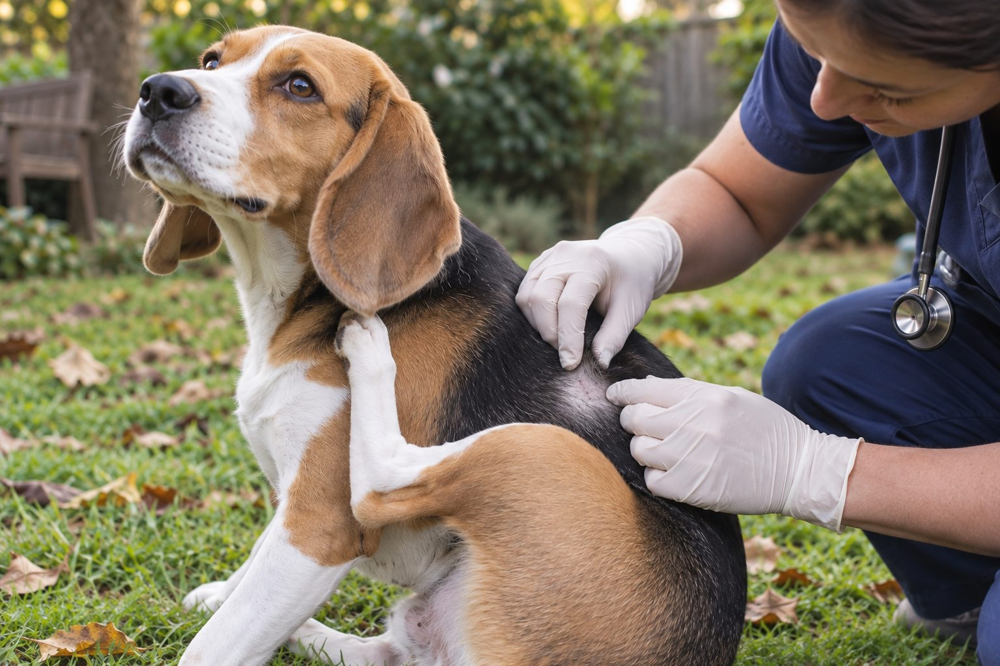

Check for skin changes and recent exposures, but ask a veterinarian to assess persistent itching; several conditions can look alike.
A dog can itch even when you have not seen a flea. Skin irritation has many possible causes, from dry air to allergies or infection. Scratching itself can damage skin, so a pattern that continues deserves attention rather than repeated guesswork.
What to check first
Part the fur and look for redness, bumps, flakes, hair loss, scabs, or moist patches. Check the ears, belly, paws, and tail base. Note whether the itch is seasonal, follows a bath, or began after a new product. Take clear photos if the appearance changes.
Not seeing fleas does not always exclude them. Your veterinarian may recommend a closer check and discuss appropriate parasite prevention. Avoid applying multiple treatments without advice.
Look beyond a single quick glance for fleas. Some dogs groom away visible insects, and parasite prevention can fail if a dose was missed or applied incorrectly. At the same time, not every itch is caused by parasites. Note where the dog scratches: ears, belly, paws, back, or the base of the tail. Check for redness, crusts, hair loss, odor, and broken skin. Photograph a patch in good light and note when it appeared. This gives your veterinarian a more useful picture than the statement that the dog is itchy everywhere.
Do not apply several flea products together to test a theory. Read the current product label and ask a veterinary professional before adding another treatment. Tell the clinic every product used on the dog and other pets, including shampoos, supplements, and household sprays. A careful history helps avoid accidental over-treatment and directs the examination.
Possible explanations
Environmental allergies, contact irritation, dry skin, ear issues, parasites, and skin infections are among the possibilities. Location and timing can provide clues, but no single sign confirms the cause. Some dogs have more than one contributing problem.
Your veterinarian can examine the skin and decide whether tests or treatment are needed. An over-the-counter shampoo that helps one issue may worsen another.
Skin irritation can have many overlapping causes, including parasites, infection, environmental exposures, and allergic disease. A dog may also scratch because one ear or a small skin fold is uncomfortable. The pattern can vary with season, but a seasonal change alone does not prove an allergy. A veterinarian may examine skin or ear material, review parasite control, and decide whether further testing or treatment is appropriate. Self-diagnosing from a photo can delay care when the underlying problem is painful.
Watch for secondary damage. Repeated scratching can create raw spots that then become more uncomfortable, and licking may keep them moist. If the dog has a rapidly spreading lesion, marked swelling, pain, or cannot rest, call promptly. Record whether itch started before or after a new shampoo, walk route, bedding detergent, or medication, but do not assume the newest item must be responsible.

Reduce irritation while waiting for advice
Keep bedding clean, rinse off obvious irritants after walks, and avoid strongly scented grooming products. Discourage scratching that breaks the skin by asking your veterinarian about safe options. Do not give human medicines or apply essential oils without veterinary guidance.
Record the date the itching began, affected areas, diet changes, and parasite prevention used. This history can speed up a useful conversation.
While waiting for advice, keep the skin clean and dry without scrubbing it. Avoid essential oils, human antihistamines, steroid creams, or leftover antibiotics unless your veterinarian has specifically directed them for this dog. A product can mask a symptom, be unsafe when licked, or interfere with an examination. Wash bedding and keep up a veterinarian-approved parasite prevention plan, but resist a cycle of changing several products every few days. That makes it difficult to identify what actually helps.
If one area is being traumatized by scratching, ask the clinic how to prevent further injury safely. A cone or other barrier may be useful in some cases, but it should fit properly and not prevent eating or drinking. If the dog is distressed, a home workaround is not a substitute for timely veterinary help.
Track itch before the appointment
| Record | Why it helps |
|---|---|
| Body location and first date | Shows whether the problem is focused or spreading. |
| Products and parasite treatment dates | Helps the veterinarian review exposure and avoid overlap. |
| Sleep loss, sores, or ear signs | Shows how much the itch affects comfort and urgency. |
Do not start multiple new skin products while trying to identify a cause.
When to book an appointment
Book a visit if scratching persists, interrupts sleep, or causes redness or hair loss. Seek more urgent care for rapidly spreading swelling, severe pain, breathing trouble, or a dog that seems ill. Prompt treatment may prevent a sore area from becoming infected.
An itch diary can be brief. Record the body sites, time of day, severity compared with the previous week, and any visible skin changes. Note whether anyone in the household has seen fleas or flea dirt, and whether other pets are itchy. Include the exact dates of parasite treatment rather than saying it is current. Bring product packaging or photographs of the labels if possible. These details help the veterinarian assess a recurring problem more efficiently.
Follow the treatment plan for the full recommended period and ask what improvement should look like. Skin and hair may recover more slowly than the dog's comfort. If the scratching returns immediately after treatment, report that pattern instead of repeatedly restarting a leftover medication. Chronic itch often requires follow-up and adjustment; the goal is both relief now and a clear understanding of why the cycle continues.
Practical details
Why 'no fleas' does not settle the question
Fleas can be difficult to see, especially in a thick coat, and a sensitive dog can react to a small exposure. But parasites are only one possible cause of itch. Environmental allergens, contact irritation, dry skin, ear disease, and skin infection can produce similar scratching. Your veterinarian may ask about parasite prevention, travel, season, and other animals in the home before deciding what to examine.
Map where the dog scratches. An itchy tail base, ears, paws, or belly can guide a professional, but no location proves a diagnosis. Photographs taken in the same light help show whether a patch is changing. Avoid applying several new products at once; doing so can obscure the pattern and irritate already sensitive skin.
Sort the itch by what you can observe
Check for plant material or an obvious irritant and see whether the scratching settles.
Record timing and location; book a veterinary discussion if it continues.
Arrange an appointment because secondary skin problems can develop.
Seek urgent veterinary care rather than trying a home allergy remedy.
What a veterinary visit may clarify
The veterinarian can examine the skin and ears, look for parasites, and decide whether samples or further tests are useful. A red patch might be a consequence of scratching rather than the original trigger. This distinction matters because controlling itch and addressing damaged skin may both be necessary. Do not use leftover prescriptions from another pet or an earlier episode without advice.
Bring the names of shampoos, flea products, supplements, and any new household cleaners. Mention whether the problem is seasonal or year-round. Food changes are sometimes discussed, but a proper diet trial requires a plan; casually switching flavors every week does not provide a clear answer.
One dog scratches briefly after rolling in dry grass and settles after a rinse. Another scratches the same ear every evening and develops a smell and dark discharge. A third has red feet and a sore belly. These situations should not all be met with the same shampoo. The body location, duration, and associated signs guide the next question. Persistent ear signs, wounds, or widespread itch warrant professional assessment even if you never see a flea.
Notice how scratching affects daily life. A dog that wakes repeatedly, interrupts meals to chew, or avoids touch is telling you the problem is more than cosmetic. Let the clinic know about those changes. Do not wait for severe hair loss before seeking help. Earlier assessment can reduce self-injury and the chance of a small irritated area becoming a larger, more painful one.
Comfort while you arrange care
Keep bedding clean and rinse obvious outdoor residue from paws when necessary. Brush gently only if the dog enjoys it and the skin is not sore. Avoid heavily fragranced products, human creams, and essential oils. Do not let scratching create an open wound while waiting for an appointment; ask the clinic what temporary protection is suitable.
If the dog is otherwise bright and the itch is mild, a short observation log can be useful. If sleep is interrupted, skin breaks open, or the itch spreads, call sooner. The aim is to identify the cause with professional help, not to suppress one symptom long enough that the underlying problem is missed.
After the immediate flare improves, create a maintenance plan with the veterinarian. That may include reliable parasite control, appropriate skin care, or follow-up visits depending on the diagnosis. Ask which signs should prompt another call and which routine changes are safe to make at home. Keep the plan specific to this dog; a housemate's treatment may be inappropriate even when both scratch. Avoid recommending a product to other owners based only on your dog's response.
Review the home environment sensibly. Wash blankets, keep grooming tools clean, and notice whether a cleaning product leaves a strong residue where the dog lies. Do not attempt to sterilize the whole home in response to ordinary itch. A measured approach protects the dog from unnecessary exposures and gives your veterinarian clearer evidence about what changed.
Before the appointment, resist using a new scented wash to make the dog more presentable. The clinician may need to see and sample the skin as it is. Keep the dog comfortable, prevent obvious self-injury as advised, and note any product already applied. Tell the clinic if the itch is affecting sleep, play, or appetite. A dog that scratches through the night is experiencing a meaningful welfare problem even if the visible rash is small. Earlier care can reduce damage from repeated rubbing.
After treatment begins, ask what to do if a dose is missed and when improvement should be expected. If the dog improves and then relapses, report the timing rather than assuming treatment failed in the same way. A repeat pattern can reveal useful clues about exposure or an underlying condition. Do not give another pet the same medication because it worked once. Skin problems can look similar while requiring different care. A precise history and follow-up are more valuable than cycling through home remedies.
Document the itch before changing products
Look at where the scratching happens: ears, paws, belly, back, or several areas. Note the time of day, recent baths, new bedding, seasonal exposures, and any changes in food or medication. Photograph redness, hair loss, or scabs. A clear pattern is more useful to a veterinarian than the broad observation that the dog is itchy, and it may prevent unnecessary changes to several parts of the routine at once.
Do not assume a flea problem is impossible because you have not seen a flea. Also avoid treating every itch as an allergy. Infection, parasites, and other skin problems can look similar to a pet owner. If scratching breaks the skin, sleep is disrupted, or the dog develops odor or discharge, arrange an examination. Use only products recommended for your dog, and ask before applying human creams to irritated skin.
Until the appointment, keep the coat clean and dry without overbathing. Wash bedding according to its label and note whether this changes comfort. If your dog has a prescribed parasite prevention plan, follow it consistently. Bringing a concise timeline of symptoms and products helps the veterinary team choose a sensible next step.
Continue exploring
For a broader routine, read Why Is My Dog Shaking? Common Reasons Explained, Why Is My Cat Drinking So Much Water?, and How to Track Your Pet's Weight at Home.
Frequently Asked Questions
Can a dog have fleas if I cannot see them?
Yes. Fleas can be hard to spot, and a veterinarian can help assess the possibility.
Could shampoo cause itching?
A product may irritate skin, particularly if it is strongly scented or not rinsed well.
Should I change my dog's food?
Discuss a diet trial with your veterinarian rather than making several changes at once.
Editorial references
These resources informed the general guidance in this article. They do not replace advice tailored to your pet.
This guide offers general information. Your pet’s age, health, and history may call for a different plan. For medical concerns, ask your veterinarian.